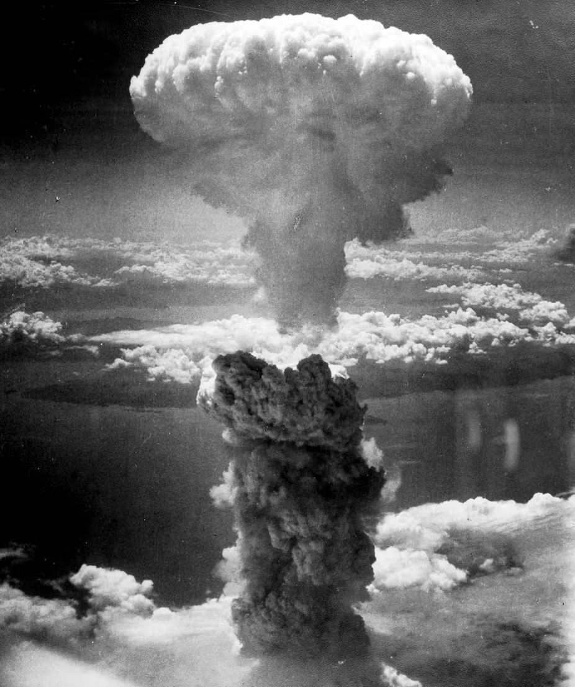

Was ist passiert?
Am 6. August 1945 warf die USA die erste Atombombe namens "Little Boy" auf die japanische Stadt
Hiroshima ab, die zwischen 70.000 und 140.000 Menschen tötete und schwere Schäden verursachte. Drei Tage
später wurde eine zweite Atombombe namens "Fat Man" auf Nagasaki abgeworfen, was zu weiteren 40.000
Todesopfern führte. Dies führte zur Kapitulation Japans im Zweiten Weltkrieg und markierte das Ende des
Krieges im Pazifik. Die Vorgeschichte beinhaltet die Entwicklung der Atombombe im Rahmen des
Manhattan-Projekts, den Kriegseintritt der USA im Dezember 1941 nach dem Angriff von Japan auf Pearl
Harbor und die Verhandlungen mit Japan über die Bedingungen der Kapitulation nach der Kapitulation von
Deutschlands 1945. Die Atombombenabwürfe führten auch zur Entstehung des Kalten Krieges, einer Zeit der
Spannungen zwischen den USA und der Sowjetunion, die sich gegenseitig als Feinde betrachteten und
nukleare Waffen entwickelten. Die USA wurden als einzige Atommacht angesehen und dies verschaffte ihnen
einen Vorteil in der Weltpolitik.

Reaktionen auf die Anschläge
Japan
Japan hat die Atombombenabwürfe als unmenschlich und barbarisch kritisiert. Es wird betont, dass viele der
Opfer Zivilisten waren und dass die Atombombenangriffe eine Verletzung der Menschenrechte darstellen. Japan
setzt sich für eine nuklearwaffenfreie Welt ein.
USA
Die USA betrachten den Abwurf der Atombomben als notwendiges Übel, um den Krieg schnell zu beenden und
amerikanische Leben zu retten. Sie argumentieren, dass ein konventioneller Angriff auf Japan mehr Leben
gekostet hätte als die Atombombenabwürfe. Die USA haben jedoch auch Bedauern über die Opfer ausgedrückt und
sich für eine weltweite Abrüstung eingesetzt.
Sowjetunion
Die Sowjetunion betrachtete die Atombombenabwürfe als einen Akt der Aggression und eine Bedrohung für ihre
eigene Sicherheit. Sie fühlten sich von den USA bedroht und entwickelten ebenfalls nukleare Waffen, um sich
zu verteidigen.
Deutschland
Deutschland war zu dieser Zeit ein besetztes Land und hatte keine offizielle Meinung zum Abwurf der
Atombomben. Es gibt jedoch viele deutsche Stimmen, die die Atombombenangriffe als unmenschlich kritisieren
und sich für eine Welt ohne Atomwaffen einsetzen.